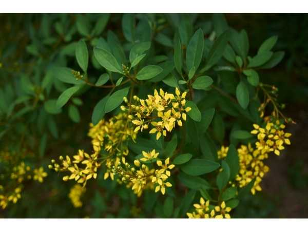

Galphimia glauca
Common Names: Gold Shower, Thryallis, Rain of Gold, Shower of Gold
Local Name: Gold Shower, Thryallis
Family: Malpighiaceae
Origin: Central America, Mexico
Plant Type: Evergreen shrub
Variety: Galphimia glauca (standard yellow), Galphimia gracilis (smaller form)
Average Lifespan: 15–20 years with proper care
| Growth Habit | Dense, rounded evergreen shrub with upright branching; naturally compact form |
| Plant Size | 1.5–3 meters tall, 1–2 meters spread |
| Leaves | Opposite, simple, ovate to elliptic, 3–7 cm long, glaucous blue-green with smooth margins |
| Flowers | Bright golden-yellow, 1.5–2 cm diameter, 5 clawed petals in terminal racemes 10–20 cm long |
| Flower Characteristics | Star-shaped with 5 yellow petals and prominent red-tipped stamens; petals drop cleanly creating a golden shower effect |
| Fruit | Small 3-lobed capsule, 5–8 mm diameter, splitting into 3 segments when ripe |
| Fruit Color | Green maturing to reddish-brown |
| Seed Characteristics | Small, smooth, brown seeds; one per capsule segment; moderate viability |
| Root System | Moderately deep, fibrous root system; drought-adapted |
| Climate | Tropical to subtropical; frost-sensitive; USDA zones 9–11 |
| Temperature Range | 18–38°C ideal; tolerates brief cold to −2°C; damaged below −4°C |
| Rainfall Requirement | 500–1500 mm annually; highly drought-tolerant once established |
| Soil Type | Well-drained sandy, loamy, or rocky soil; tolerates poor soils |
| Soil pH Preference | 6.0–8.0 (adaptable to slightly acidic to alkaline) |
| Sun Requirement | Full sun (6+ hours daily); blooms best in full sun |
| Spacing | 1–1.5 meters between plants; closer for hedge planting (60–90 cm) |
| Irrigation Method | Drip irrigation or hand watering; minimal once established |
| Water Requirement | Low to moderate; very drought-tolerant once established |
| Can it Grow in Pots? | Yes, in large containers (20+ liters) with excellent drainage |
| Fertilizer Schedule | Light feeding 2–3 times per year (spring, summer, early autumn) |
| Recommended Organic Fertilizers | Compost, slow-release balanced fertilizer, bone meal |
| Pesticide Frequency | Rarely needed; very pest-resistant plant |
| Recommended Organic Pesticides | Neem oil or insecticidal soap if scale or whitefly appear |
| Mulching Practice | Light organic mulch (5 cm) to conserve moisture; not strictly necessary |
| Training System | Naturally compact; can be shaped as formal hedge, informal screen, or specimen shrub |
| Pruning Time | Late winter or early spring before new growth; light shaping anytime |
| How to Prune | Cut back by one-third to maintain shape; remove dead or crossing branches; tolerates hard pruning for rejuvenation |
| Common Pests | Scale insects, whiteflies, occasional caterpillars; generally very pest-free |
| Common Diseases | Root rot in waterlogged soil, leaf spot in humid conditions; generally disease-resistant |
| Disease Prevention & Remedies | Ensure excellent drainage, avoid overwatering, provide good air circulation |
| Flowering Months | Year-round in tropical climates; spring through autumn in subtropical regions |
| Fruiting Season | Continuously following flowering; small capsules form throughout the year |
| Days to Harvest | Ornamental; flowers enjoyed on the plant; cut stems last 5–7 days in vase |
| Harvest Indicators | Flowers fully open with bright yellow color; petals drop cleanly when spent |
| Average Yield per Plant | Hundreds of flower clusters per season; continuous blooming |
| Pollination Type | Insect-pollinated; attracts bees and butterflies |
| Pollination Notes | Bees are primary pollinators; flowers produce oil instead of nectar, collected by specialized oil-collecting bees |
| Commercial Production Regions | Mexico, Central America, Southern United States (Florida, Texas), India, Southeast Asia |
| Market Uses | Landscape ornamental, hedge plant, container plant, butterfly garden specimen |
| Processing Uses | Herbal medicine preparations (Galphimia extract); ornamental nursery trade |
| Market Value (Approx.) | ₹150–400 per plant (nursery); widely available in tropical nurseries |
| Traditional Medicine | Used in traditional Mexican medicine (calderona amarilla) for treating anxiety, allergies, and asthma for centuries |
| Active Compounds | Contains galphimines (nor-seco-triterpenes), particularly galphimine-B with anxiolytic properties |
| Anxiety & Sleep | Galphimine-B has been clinically studied and shown to have anxiolytic effects comparable to lorazepam without sedation |
| Anti-inflammatory Properties | Extracts show anti-allergic and anti-inflammatory activity; used traditionally for hay fever and respiratory allergies |
| Immune Support | Traditional use for respiratory conditions; flower and leaf extracts used in herbal preparations |
Disclaimer: Information provided is for educational purposes only and not a substitute for medical advice.
Add your field observations here.